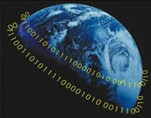

MATRIX
Você sabe os significados da palavra Matrix?
Matrix é uma palavra de origem latina que deriva de mater, cujo significado é mãe. Também designa o útero. Outros significados:
a-) molde para fundição de uma peça;
b-) circuito de codificadores e decodificadores das cores primárias (imagens de TV) e dos sons (CDs, filmes);
c-) rede de guias de entradas e saídas de elementos lógicos que permitem o funcionamento dos equipamentos de informática (placa-mãe).
No filme, como afirma Marilena Chauí, “a Matrix tem todos esses sentidos: ela é, ao mesmo tempo um útero universal onde estão todos os seres humanos cuja vida real é “uterina” e cuja vida imaginária é forjada pelos circuitos de codificadores e decodificadores de cores e sons e pelas redes de guias de entrada e saída de sinais lógicos.”
O filme e a nossa realidade
Matrix é de uma inteligência ímpar na história do cinema. Uma cena emblemática do filme é a do garoto budista que segura uma colher, e ela começa a entortar.
Nenhuma religião, ou filosofia tem tantas semelhanças com o filme Matrix-I quanto o budismo. O principal ponto em comum é a idéia de samsara ou maya, segundo a qual as nossas vidas são uma grande ilusão montada pelo nossos próprios desejos. É como se todo o mundo fosse, como diz Morpheus, "uma projeção mental da sua personalidade". As pessoas estariam presas em um ciclo: elas tratam o que sentem como se fosse real e a ignorância de que aquilo é só uma ilusão as mantém presas a esse mundo. Nesta cena do filme, Neo encontra uma criança com trajes de monge budista que entorta uma colher com a mente. O segredo, diz ela, é saber que a colher não existe. Uma vez superada a ilusão, atinge-se o nirvana, um estado que as palavras não podem descrever, em que a noção de indivíduo se perde.
No budismo, aprendemos que Sidharta Gautama era um príncipe hinduísta que abandonou seu castelo, sua esposa e seu filho para descobrir a causa de tanto sofrimento. Meditou 7 dias embaixo de uma figueira tornando-se Buda, o Iluminado, e descobriu que a razão do sofrimento seria, resumidamente, o apego e o desejo. A solução budista está em cada pessoa descobrir a sua própria "não-existência".
Segundo o budismo, o homem simplesmente deve entender que não existe o "eu". As últimas palavras de Buda, aos oitenta anos antes de morrer foram: "tudo é impermanente".
TELECINÉSIA
A idéia da telecinésia, é de que tudo no mundo é feito da mesma coisa: energia. Os átomos são feitos de energia e, conseqüentemente, nós somos energia. Por isso podemos controlar objetos pela livre vontade, temos que interagir com a energia do meio ao nosso redor, e interagimos com a energia que o objeto possui.
ENTORTANDO COLHERES
Isto requer um relaxamento profundo, então relaxe por aproximadamente dez minutos. Pegue uma colher com sua mão dominante. Segure firme com seu polegar perto da cabeça da colher e coloque seus outros dedos nas costas. Feche seus olhos e sinta todo o poder (energia) à sua volta. Concentre a energia no seu polegar e friccione seu dedo para cima e para baixo na colher. Aproximadamente um minuto depois, a colher estará morna. Em sua mente, imagine a colher e seu dedo se unindo em um só. Neste ponto, seu polegar deve SER a colher, e a colher a sua mão. Dobre agora a colher como se estivesse dobrando seu dedo, mas faça isso sem usar sua força física, você precisa sentir que seu dedo dobra como se não houvesse nada em sua mão. Agora abra os olhos e veja o resultado.
E então você tentou entortar a colher? Conseguiu? Não, então não desanime fácil, QUALQUER PESSOA com a utilização de sua força de vontade e um pouco de treinamento pode conseguir.
Estaríamos vivendo num mundo de Matrix?
SOMOS O QUE SOMOS E FAZEMOS O QUE FAZEMOS PORQUE “NOS” DISSERAM COMO SOBREVIVER
O PLANO “A” E O PLANO “B” DA EVOLUÇÃO
Não importa em que país tenhamos nascido, ou em que época, ou em qual ambiente ou cultura fomos criados, SOMOS O QUE SOMOS E FAZEMOS O QUE FAZEMOS porque “NOS” DISSERAM como sobreviver, reproduzir, nos comportar, como pensar, o que é certo e o que é errado, o que é bom e o que é ruim, o que é verdade, o que é mentira – o que é “REALIDADE”. Para nos impor isso, a Evolução usou dois planos que combinam o material hereditário de nossos corpos, nossa bioquímica interna, nossa forma, sexo, estatura, nossos sentidos, sistemas, amores e ódios, paixões e desesperos, ternura e agressão. O primeiro desses planos (vamos chamá-lo de plano “A”) é a memória genética e cerebral. O segundo (vamos chamá-lo de plano “B”) é a memória cultural.
O PLANO “A”: Todos os seres vivos, desde um vírus ou uma ameba unicelular, passando pelas baleias azuis de 30 metros e chegando até você que está lendo esta página agora, receberam em seus GENES todas informações necessárias para a construção de seus corpos, o funcionamento de seus órgãos, seus metabolismos e suas NECESSIDADES, condutoras de seus comportamentos. Essas informações foram “escritas” e armazenadas na hélice dupla do DNA, em uma linguagem de quatro letras que representam os quatro tipos de diferentes de nucleotídeos, os componentes moleculares que formam o DNA. A quantidade dessa informação a que os seres vivos têm acesso é uma indicação de sua inteligência. É claro que saber muito não significa ser esperto; a inteligência não é só informação, mas também julgamento, a maneira pela qual uma informação, utilizada e coordenada. De qualquer forma, chamamos e medimos as unidades dessa informação de “bit”, abreviação de binary digit – dígito binário. Um vírus necessita de 10.000 bits para ser e funcionar como um vírus. Uma bactéria utiliza perto de um milhão de bits, por isso faz mais coisas que um vírus. Uma ameba unicelular nadadora conta com cerca de quatrocentos milhões de bits em seu DNA. Já uma baleia ou um ser humano necessita de algo como cinco bilhões de bits. Cada uma das cem trilhões de nossas células contém uma “biblioteca” completa de instruções de como fazer cada parte nossa funcionar, contém tudo que nosso corpo sabe como fazer nele mesmo: como respirar, rir, espirrar, reconhecer padrões, se reproduzir ou digerir uma maçã.
|  |
Mas, suponhamos que o que você tivesse que fazer fosse tão complicado que mesmo bilhões de bits de instrução fossem insuficientes. Suponhamos que o ambiente estivesse mudando tão rápido que a enciclopédia genética pré-codificada, que servia perfeitamente bem antes, não seja mais suficiente. Eis o porquê de possuirmos cérebros! Quando os nossos genes não conseguiam mais armazenar toda a informação necessária para a sobrevivência, lentamente a evolução inventou o cérebro. O conteúdo de informação do cérebro humano expresso em bits é provavelmente comparável ao número de conexões entre seus neurônios, cerca de cem trilhões de bits. Se escritas por exemplo em inglês (uma das línguas com maior poder de síntese), estas informações preencheriam cerca de 20 milhões de volumes, tantos quantos os existentes nas maiores bibliotecas do mundo.
O equivalente a 20 milhões de livros está dentro da cabeça de cada um de nós. Com esse poder, o cérebro faz muito mais do que simplesmente armazenar informação. Ele compara, sintetiza, generaliza, analisa, confere significado, toma decisões e gera abstrações. Para fazer tudo isso, precisamos calcular muito mais do que os nossos genes poderiam saber. Nossas necessidades emocionais e nossa paixão pelo saber são o instrumento da nossa sobrevivência, o porquê de nossa biblioteca cerebral ser cerca de dez mil vezes maior do que a genética. São parte de nossa humanidade, embora não sejam caracteristicamente humanos. Muitos outros animais possuem sentimentos e inteligência. O que distingue a nossa espécie é o pensamento. Com ele, não necessitamos mais ser aprisionados nos padrões geneticamente herdados de lagartos e babuínos (VEJA A MATÉRIA SOBRE REPTILIANOS). Não mais a mercê do cérebro de réptil, podemos mudar a nós mesmos.
Então veio o tempo, talvez há dez mil anos, quando necessitávamos saber mais do que podia ser convenientemente contido nos cérebros, e aprendemos a estocar quantidades enormes de informação fora de nossos corpos. Somos a única espécie do planeta, até onde sabemos, a ter inventado uma memória comunal armazenada fora dos genes e do cérebro. O nome desta memória é “a língua escrita”.
O PLANO “B”: Com o desenvolvimento da língua escrita, informações puderam ser passadas de uma geração a outra sem precisar esperar que o tão lento processo de mutações aleatórias e seleção natural as codificassem na seqüência do DNA. A atual taxa de atualização do DNA humano pela evolução biológica é de cerca de um bit por ano. Mas 200 mil novos livros são publicados por ano, uma taxa de novas informações de mais de um milhão de bits por segundo. Somados com todas as outras formas de comunicação hoje disponíveis como música, cinema, canais de televisão abertos ou pagos, páginas na internet, revistas e jornais, chegamos ao estonteante número de 51 bilhões de giga bits de informação disponível todos os dias. Essa transmissão de conhecimento por meios externos, não biológicos, levou a raça humana a dominar o mundo e a ter uma população em crescimento exponencial. Isso fatalmente fez com que nossa evolução fosse dramaticamente menos lente e dolorosa, pois nos isentou da penúria, do sofrimento horrível de contarmos apenas com nossa própria experiência pessoal para aprendermos a sobreviver e a nos desenvolver.
Agora, não importa como essa informação chegue até nós, seja através das pinturas nas cavernas, da fala de um ancião ao redor de uma fogueira, de pergaminhos de couro ou papiro, ou através de um sofisticado cabo de fibra ótica, de um outdoor luminoso ou de um disco de silício, o que nossa humanidade está fazendo é contar sua HISTÓRIA. Isso vem sendo feito há milênios em cada uma e em todas as diferentes culturas desse nosso mundo. Através das estórias, deixamos de nos conduzir apenas pelos impulsos e instintos naturais de nossa orientação genética e passamos a nos orientar pelas pegadas da experiência de outros que nos antecederam.
A história da humanidade – todas as estórias que nos contaram através dos livros, sejam fábulas bem contadas (hoje se sabe que Colombo não “descobriu” a América, mas isso continua sendo ensinado nas escolas), é o Plano “B” da Evolução, a segunda via de transferência de conhecimento para adaptação e sobrevivência.
A questão é que essas histórias ou estórias nos provêem a base em cima da qual tomamos DECISÕES sobre AS NOSSAS VIDAS. Constituem a REFERÊNCIA que utilizamos para saber quais VIRTUDES – uma outra forma de dizer VALORES e SENTIMENTOS que buscamos em uma base regular, constituirão RECOMPENSA (prazer) e quais ESTADOS EMOCIONAIS ou fraquezas irão representar CASTIGO para nós (dor). A HISTÓRIA da humanidade é uma ESTÓRIA que tem o poder de dar forma às nossas vidas, uma “MATRIX”, uma matriz, um molde genético e cultural do qual derivamos e do qual apenas uma forma de CONHECIMENTO muito, MAS MUITO SINGULAR MESMO, tem o poder de nos dissociar, em alguns casos “LIBERTAR”. A liberação dessa “MATRIX” é a única JORNADA DO HERÓI, com UMA ou com MIL Faces, que não pode ser contada, apenas experimentada. A jornada que rodos teremos que (respirando ou não) fazer um dia.
P.S.:O texto acima foi retirado de um Informativo da MATRIX UNIVERSITY BRASIL, do ano de 2004. Autoria de: Amauri Pereira.
Ainda não entendeu?
Você quer saber o que é Matrix?
Vou explicar...
No filme Matrix, a realidade é que as máquinas forjam uma realide na mente das pessoas, para que elas não percebam nada, e continuem levando suas vidas normalmente, enquanto elas (as máquinas) usam seus corpos na verdadeira realidade para poder utilizar sua energia.
Já em nosso DNA humano fomos criados para vivermos a vida presos aos cinco sentidos básicos, para que através desta vivência experimentássemos a vida material como a nossa verdadeira realidade. Seja para evoluir através das vivências do dia-a-dia ou para sermos controlados por uma possível raça alienígena (ou as duas coisas!).
O que acontece, é que ao reencarnar esquecemos a nossa verdadeira essência, o lado espiritual, passamos a vida com a nossa mente fechada para a verdadeira realidade, ficamos presos pela matrix, somente o lado material da vida, e alguns poucos seres humanos conseguem se libertar dessa matrix, e assim evoluírem a um novo estado de consciência.
Portanto para nos livrar da Matrix precisamos recuperar a soberania sobre nosso corpo físico, nossa mente e nossas emoções.
"Um ser humano é parte do todo a que chamamos "universo" uma parte limitada no tempo e no espaço. Ele experiencia a si mesmo, a seus pensamentos e sentimentos como algo separado do resto - um tipo de ilusão ótica da consciência. Essa ilusão é uma espécie de prisão para nós, restringindo-nos aos nossos desejos pessoais e à nossa afeição por algumas poucas pessoas mais próximas de nós. Nossa tarefa deve ser libertar-nos dessa prisão, ampliando o círculo de compreensão e compaixão para abraçar todas as criaturas vivas e toda a natureza em sua beleza."
ALBERT EINSTEIN, QUANTUM QUESTIONS (Questões Quânticas)
“E conhecereis a verdade e a verdade vos libertará” João 8:32
Abaixo um vídeo sobre "O Mito da Caverna" de Platão. Estudar sobre esta metáfora irá te fazer entender melhor como o mundo funciona, e como ele se encaixa com o significado do filme Matrix em nossas vidas.